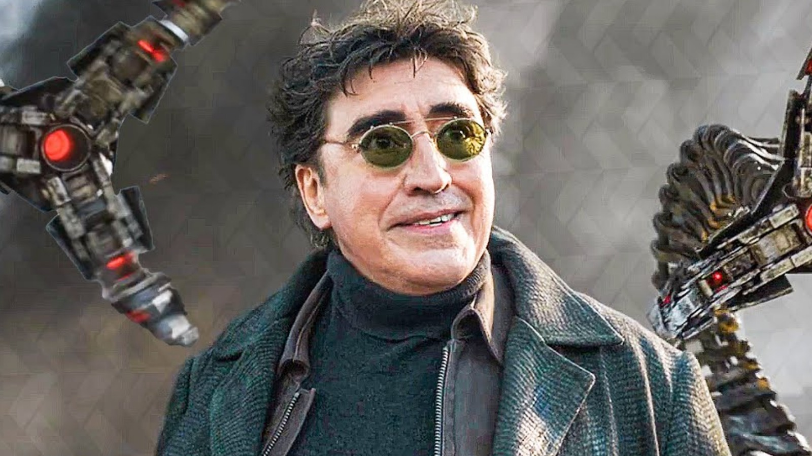
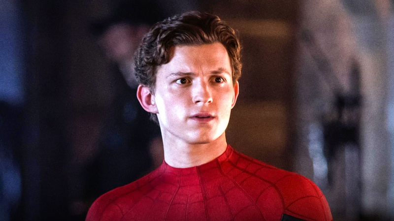
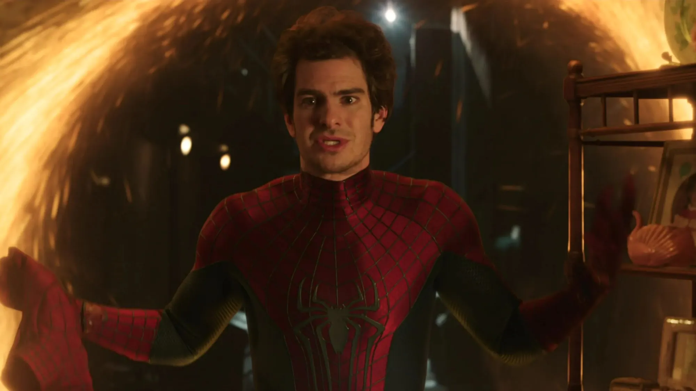

Peter Parker's secret identity is revealed to the entire world. Desperate for help, Peter turns to Doctor Strange to make the world forget that he is Spider-Man. The spell goes horribly wrong and shatters the multiverse, bringing in monstrous villains that could destroy the world. (from https://www.imdb.com/title/tt10872600/plotsummary/)
I like Spider-Man: No Way Home because it delivers an emotional payoff by bringing together different Spider-Man eras and letting the characters reconcile past mistakes. The film balances high-stakes, nostalgic action with heartfelt moments that deepen Peter Parker's growth and responsibility. Its blend of humor, spectacle, and meaningful character reunions creates a satisfying, cathartic experience. This content was created with the help of A.I.



